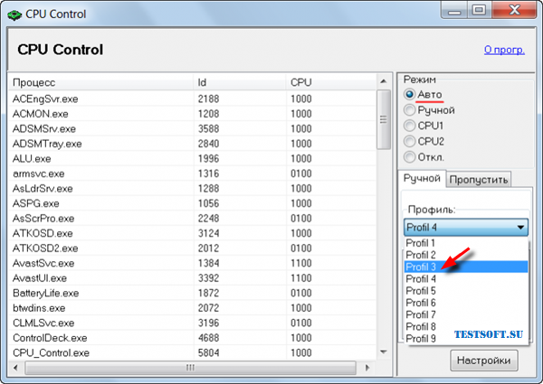
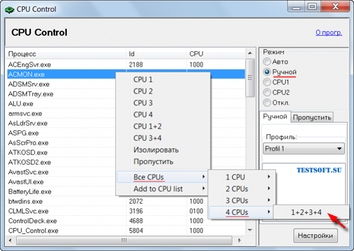

Настройка управления питанием. Оптимизация использования процессора.
Настройка схемы управления питанием по умолчанию
Используйте следующие инструкции, чтобы настроить схему управления питанием по умолчанию в процессе развертывания Windows 8 или Windows Server® 2012. Схемы управления питанием также называют планами управления питанием
Настройка схемы управления питанием по умолчанию
-
На обслуживающем компьютере откройте командную строку с повышенными привилегиями.
-
Чтобы использовать схему управления питанием с другого компьютера, импортируйте ее.
Например, чтобы импортировать схему управления питанием «Схема для улицы», в командной строке введите:
powercfg -IMPORT C:\OutdoorPlan.pow
-
Чтобы узнать идентификаторы GUID всех схем управления питанием на компьютере, введите:
powercfg -LIST
Отобразится список доступных схем управления питанием. В следующих примерах эти схемы обозначены guidPlan1 и guidPlan2.
Existing Power Schemes (* Active) ----------------------------------- Power Scheme GUID: {guidPlan1} (Balanced) * Power Scheme GUID: {guidPlan2} (Power saver) -
Обратите внимание на GUID рядом со схемами управления питанием, которые вы хотите изменить.
-
Настройте схему управления питанием, которая будет использоваться как текущая схема управления питанием по умолчанию. Например, вы можете использовать следующую команду:
powercfg -SETACTIVE {guidPlan2}где guidPlan2 — название схемы управления питанием.
Эту команду можно запустить с помощью пользовательской команды в файле ответов или в командной строке с повышенными привилегиями в режиме аудита.
Подтверждение схемы управления питанием по умолчанию
-
Нажмите кнопку Пуск и выберите Панель управления.
-
Щелкните Оборудование и звук, а затем выберите Электропитание.
Откроется окно Электропитание, и появится схемы управления питанием.
-
Просмотрите каждую схему.
-
Убедитесь, что в качестве текущей схемы управления питанием выбрана нужная схема. Текущая схема управления питанием отмечена звездочкой (*).
Оптимизация работы процессора: утилита CPU Control
В данной публикации пойдет речь еще об одном стороннем инструменте оптимизации работы многоядерных процессоров – бесплатной программе CPU Control. "Еще" – потому, что автор уже касался этой темы, смотрите заметку об ICEAffinity. Детище немецкого разработчика Маттиаса Коча (Matthias Koch), русифицированная утилита CPU Control будет особенно интересна начинающим компьютерным пользователям из-за наличия многопрофильного авторежима оптимизации, но обо всем – по порядку.
"Зачем это надо и что я буду с этого иметь?"
Данный вопрос был затронут в озвученной статье, поэтому дефрагментирую сказанное до пары абзацев:
- Некоторые приложения не поддерживают многоядерный режим, поэтому для корректной работы необходимо вручную выделить им отдельное процессорное ядро. Другой "проблемный" вариант – материнская плата асинхронно инициализирует ядра. В обоих случаях требуется оперативное вмешательство пользователя.
- По умолчанию, Windows присваивает всем запускаемым процессам равный приоритет в пользовании процессорных мощностей. Что не совсем правильно в случае запуска ресурсоемких приложений, например, когда вашему любимому Call of Duty "мешает" антивирус вкупе с дюжиной другого "второстепенного" ПО. CPU Control поможет пропорционально разнести процессы по ядрам, что напрямую скажется на общей производительности системы.
Утилита поддерживает двух- и четырехъядерные процессоры, но, по отзывам, корректно работает и на 6–8 ядрах.
Оптимизируем
1. Для начала необходимо скачать утилиту Никаких "хитростей" в установке нет, поэтому последовательно жмем "Next" ("Далее") до полной инсталляции. Кстати, программа не "сорит" в реестре, т.е. портативна и носима на съемных накопителях.

2. После запуска первым делом кликаем на "Options" ("Опции") и русифицируем CPU Control через "Languages" ("Языки") → "Russion". Далее, в соответствии со следующим скриншотом, ставим галочки напротив "Автозапуск с Windows", "Минимизировать" и "4 ядра" (для четырех и более ядер). Понятно, что если ЦП двухъядерный, активировать "4 ядра" без надобности.

3. Закрыв "Опции", в главном окне приложения видим 5 режимов контроля работы ЦП: "Авто", "Ручной", "CPU1" (все процессы выполняются на 1-ом ядре), "CPU2" (все процессы выполняются на 2-ом ядре) и "Отключено" (без оптимизации). Последние три режима нам не интересны, поэтому сосредоточимся на первых двух.
Для начинающих пользователей автор рекомендует просто выбрать режим "Авто" и, закрыв окно, проверить для будущих загрузок Windows, чтобы CPU Control был в списке автозагружаемых приложений (!). Это легко сделать, например, через Revo Uninstaller любой версии, смотрите в панели меню "Инструменты" → "Менеджер автозапуска" (при необходимости добавить приложение кликаем апплет "Добавить").

4. Для любителей "покопаться" эта простенькая утилита дает шанс "развернуться": в авторежиме имеется 9 базовых профилей-вариаций распределения процессов по ядрам (скриншот ниже). При наличии времени и открытом на вкладке "Быстродействие" Диспетчере задач ("Ctrl + Alt + Del"), для мониторинга результатов, можно выбрать оптимальный профиль под свою систему.

5. Самые "продвинутые" пользователи, желающие добиться максимальных результатов в деле повышения производительности системы данным способом, наверняка заинтересуются режимом "Ручной". В этом режиме вы самостоятельно распределяете процессы по ядрам или группам ядер. Все просто: выделяете процесс(-ы) и через правую клавишу мыши "вешаете" на нужное ядро или комбинацию ядер. Например, при выборе "CPU1" процесс будет "висеть" на первом ядре, при выборе "CPU3+4" – на третьем и четвертом ядрах и т.д.

Вот хороший вариант ранжирования для 4-ядерного ПК: системные процессы оставьте 1-ому ядру, самые ресурсоемкие приложения (типа Photoshop) "распылите" между всеми ядрами (вариант как на последнем скриншоте), а "середнячков" типа антивирусного сканера отдайте в руки комбинации на 2 ядра, скажем, "CPU3+4". Диспетчер задач Windows поможет сделать правильный выбор. Для удобства мониторинга, при открытой в Диспетчере вкладке "Быстродействие", проверьте, чтобы была активирована функция "По графику на каждый ЦП" (см. "Вид" → "Загрузка ЦП" → искомое "По графику на каждый ЦП").